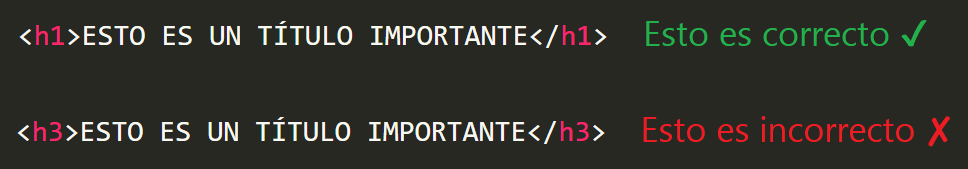
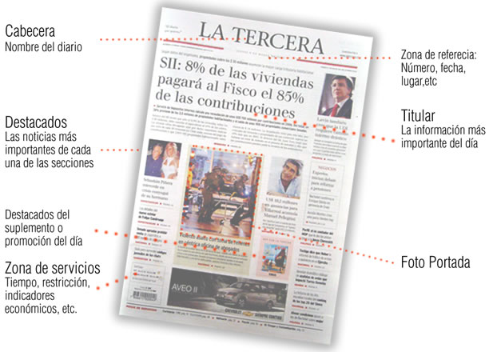

EL ARTE DE ESCRIBIR EN LA WEB
El afamado experto en usabilidad, Steve Krug, afirma lo siguiente: “Los usuarios no leen las páginas web, las ojean”. Esta sencilla frase se ha convertido en una de las normas de usabilidad más importantes al momento de crear un sitio web. La información que el usuario busca está contenida en textos, por ello es de suma importancia que estos estén estructurados de forma adecuada. A continuación, se detallan algunos consejos que le ayudarán a desarrollar una buena estructura textual en su sitio web.
Títulos
Los títulos son lo primero que ve un usuario en un sitio web. Es la pista principal que lo puede conducir hacia lo que está buscando, por ello es de vital importancia que estén ordenados correctamente según su importancia.
Un consejo que puede salvarnos a la hora de decidir la importancia de los textos, es pensar en los titulares de un periódico: la noticia principal abarcará la sección principal de la primera plana. Esto en programación se traducirá a un h1. Según descendamos, encontraremos el resto de noticias según su importancia (h2, h3, h4…) hasta encontrarnos con pequeños artículos que abarcan a lo sumo tres líneas (h6), que son los titulares de menos relevancia.
Párrafos
Los párrafos contienen la información que el usuario busca. Es aquí donde entra en juego la famosa frase de Steve Krug “elimine la mitad de las palabras de un texto y luego deshágase de la mitad de lo que quede”.

Es imprescindible que se utilice un lenguaje que el usuario pueda entender (no demasiado técnico) y que los párrafos sean concretos y explicativos por sí mismos. Si el usuario necesita tener un manual de instrucciones para comprender el texto que tiene frente a su pantalla, algo estamos haciendo mal. Si los textos colocados en páginas web apenas se leen, es evidente que los manuales ni siquiera son ojeados por los usuarios. Un alto porcentaje de los usuarios revisa las páginas web con prisa (por eso las ojean, no las leen) o no están interesados en todo el contenido de la página, sino en algo específico. Por esta razón, aquello que alcancen a ojear debe ser suficiente para concretar su búsqueda.
VOLVER A LA PÁGINA PRINCIPAL